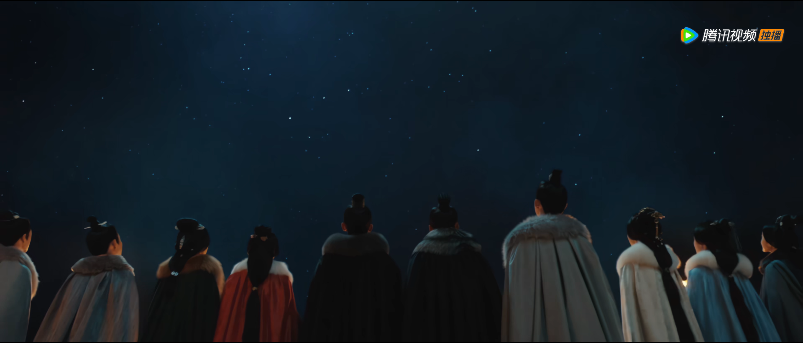

剧情简介
《星汉灿烂·月升沧海》电视剧是由吴磊、赵露思领衔主演的古装传奇剧，该剧改编自关心则乱的小说《星汉灿烂，幸甚至哉》，讲述程家女名少商，因战乱自幼被父母留在祖母身边成为“留守儿童”，婶娘狼心纵容，意图将其养成废人的故事。 程家女名少商，因战乱自幼被父母留在祖母身边成为“留守儿童”，婶娘狼心纵容，意图将其养成废人。面对重重陷阱，程少商为活命，假荒诞、真苦学，掩盖锋芒等待父母归来。可拨开乌云见月明时，却因多年疏离致使亲情已难再拾。缺爱的程少商，遇新帝义子凌不疑、白鹿山才子袁慎、世家子弟楼垚，三人各有优劣。在选择适婚者上，程少商既自卑又务实，尽管情感之路颇多坎坷，但她从不后悔自己的每次选择。在与凌不疑的相处之中，也阴差阳错卷入了凌不疑的家庭与身世之谜中。种种事件，程少商屡立奇功，也从凌不疑的家庭关系中学会与父母相处之道，以及如何经营自己的爱情。同时程少商与凌不疑也在这些经历中各自变化成长，慢慢与自己和家庭和解，并坚守内心的正义，携手化解国家危机，成就一段佳话。